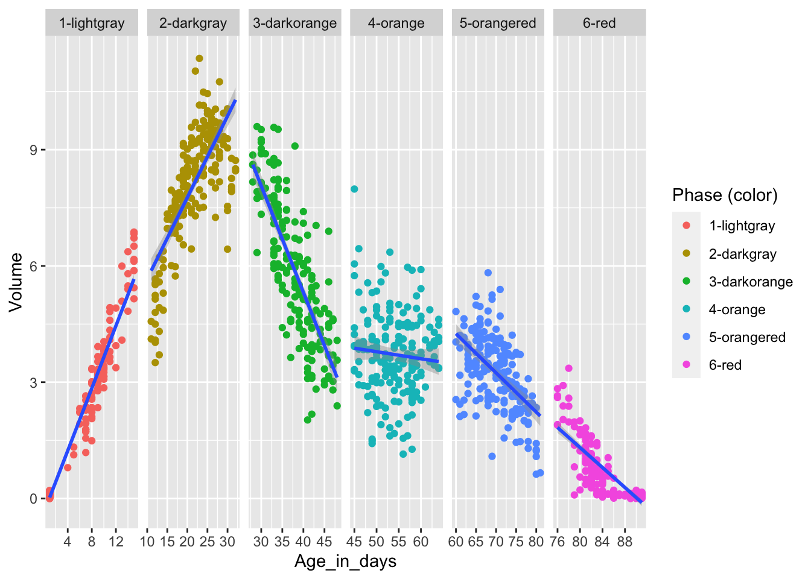
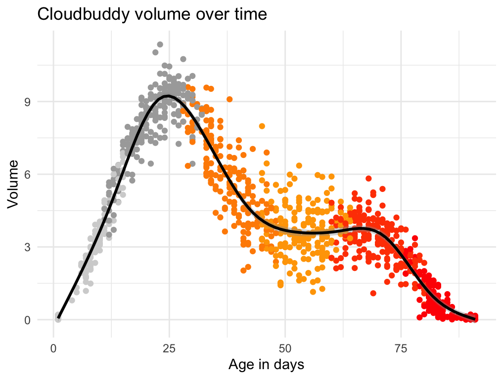

ggplot2 to create data visualizationsA nice review of the RStudio IDE and R Projects: https://www.youtube.com/watch?v=kfcX5DEMAp4
The data visualization methods we will cover today is based off of Chapter 3 (sections 3.1 - 3.6) in the R4DS textbook: https://r4ds.had.co.nz/data-visualisation.html
The homework exercises for this week are below. I suggest that you create a new R script to work through the answers, and save your exercises script in your RStudio Project for the class.
You’ll first need to read in the data the way that we talked about
during the live session, and call it cb_data.
Create a scatter plot using cb_data, showing the
relationship between the variables Age_in_days and
Volume.
Recreate the R code necessary to generate the following graph:
In our Cloudbuddy data there are measurements of both Weight and
Volume. It is reasonable to assume that there is a strong relationship
between these two variables. Start with the scatter plot you made in #1
and map Weight to a few different aesthetics (for example
size, shape and color). Which
aesthetic best captures the relationship between Weight and
Volume over time?
In exercise 3, Weight, a continuous variable, was
mapped to different aesthetics. Now try mapping
Phase (color), a categorical variable, to the same
aesthetics you tried in #3. Do these aesthetics behave differently for
continuous vs. categorical variables?
What’s gone wrong with this code? Why are the points not blue?
ggplot(data = cb_data,
mapping = aes(x = Age_in_days,
y = Volume,
color = "blue")) +
geom_point()What happens if you map an aesthetic to something other than just
a variable name, like aes(color = Observer == "raID-02")?
Note, you’ll also need to specify x and y, and add
geom_point().
Run ?labs, read the help page and see if you can
recreate the plot below. Note that labs can be used to
remove labels as well as adding them. Bonus points if you can figure out
how to add the superscript in y-axis label.
The default ggplot2 settings create plots with a
characteristic grey background. This does not align with everybody’s
preference (Hasse for example hates it). Luckily, changing the overall
look of a plot is easy. Take a look at this
link, read about how to change complete themes and try a few themes
(using any plot creating code from previous exercises).
Some themes are not great when working with facets. Why?
Could you not find a theme you like? Would you like more options?
Here is a link
with info about the ggthemes package, which after you
install it (using install.packages("ggthemes")) gives you
many more themes (and other options to customize the look of plots made
with ggplot2).
What does the group = aesthetic do? Run the code
below and explain what you see.
What does se = FALSE in geom_smooth do?
What happens if you set it to TRUE in this case?
ggplot(data = cb_data,
aes(x = Age_in_days,
y = Volume)) +
geom_smooth(aes(group = Cloudbuddy),
se = FALSE,
linewidth = 0.2)Do your best to recreate the plot below. Check out this
link to figure out how to fit a straight line to the data using
geom_smooth (instead of the wiggly trajectories we have
seen this geom produce so far).

Assign the “correct” colors to the Phase (color)
variable in a scatter plot where x = Age_in_days and
y = Volume (meaning that the dots in the scatter plot
representing for example 1-lightgray should have the color
"lightgray" and so forth). Take a look at this link
(Example 2) to figure out how to manually change the default color
scheme.
Run ?scale_color_manual in the R console. What happens?
Find the paper talking about color vision deficiencies (and read it if
you are interested). There is a color scheme in the
ggthemes package made specifically with color vision
deficiencies in mind. Can you find it in the ggthemes
documentation?
What does the c() function do?
After changing the colors in the exercise above, the color legend (the list of colors to the right of plot panel, sometimes also called the color guide) is a bit redundant. Can you figure out how to remove it? Google will be your friend here, and good search terms could be ggplot2, color legend and remove.
Recreate the R code necessary to generate the following graphs.
